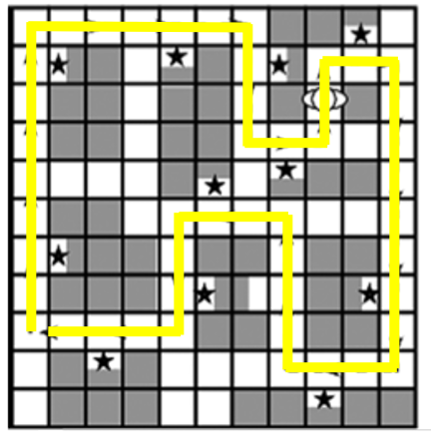
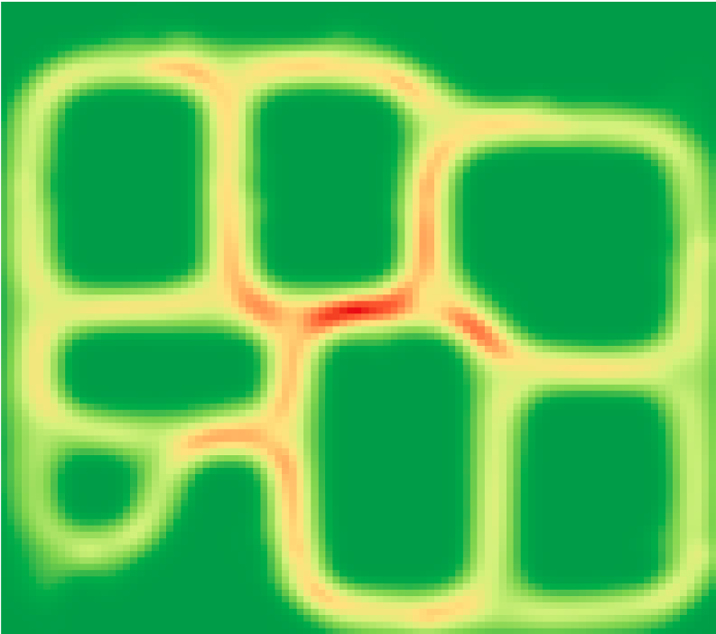
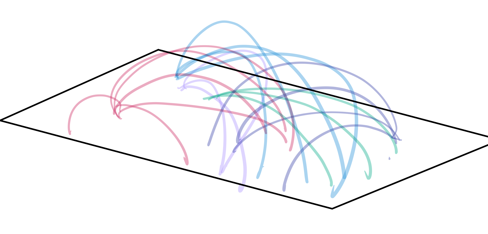
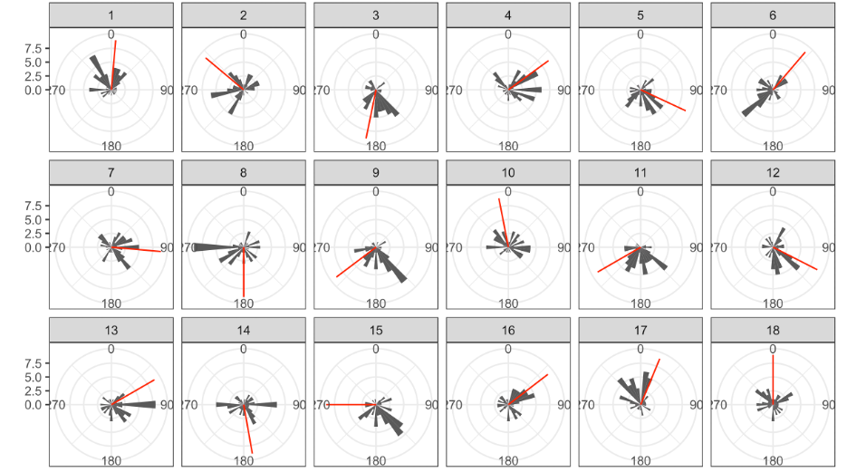
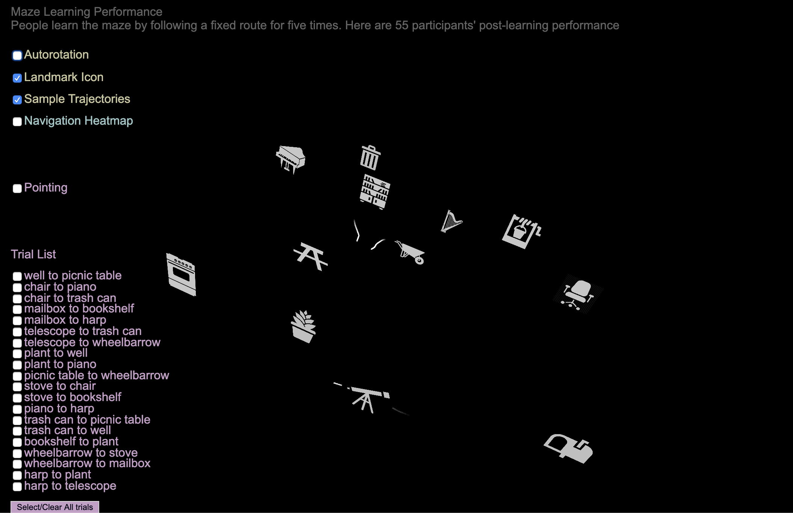
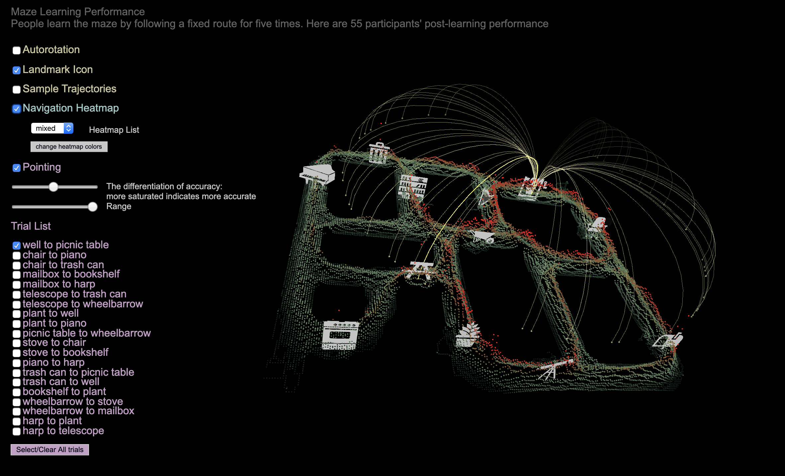
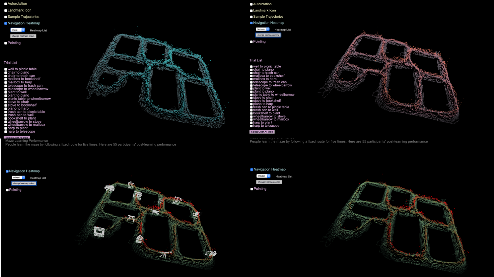
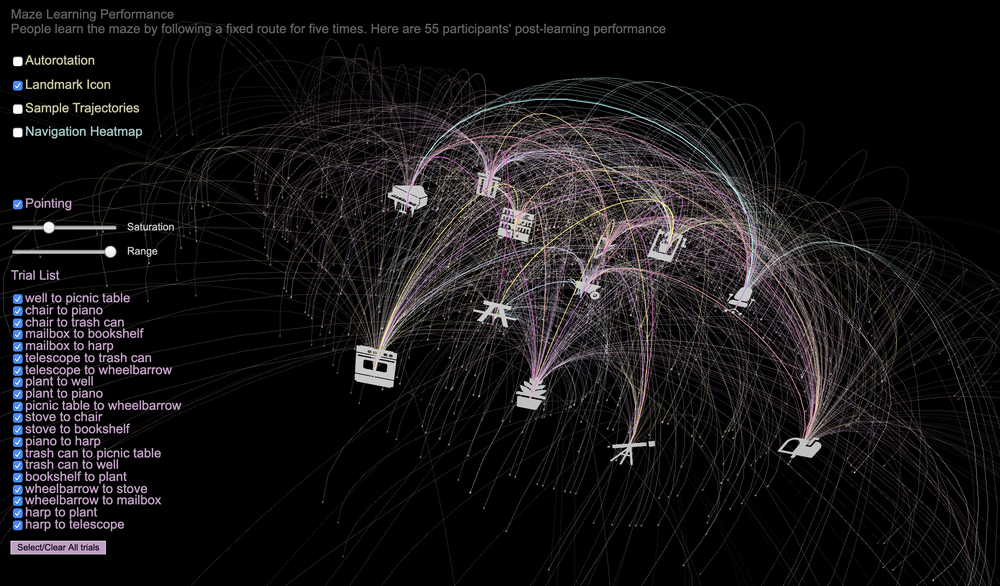

Individual Differences in Spatial Memory of a Virtual Maze
MAT 259, 2020
Chuanxiuyue (Carol) He
Concept
I am going to show people's sense of direction in a virtual maze after learning it by following a fixed lap around the maze.
According to literature on human spatial cognition, there is a spectrum of individual differences in environmental learning ability. That is, after the same exposure to a new environment, some people can establish a very good sense of direction in the environment. Others may be totally lost when doing a navigation task, including pointing to unseen objects in the environment or finding a shortcut to get to a certain target in the environment.
Visualizing people's pointing performance and shortcutting performance in the virtual environment can reveal individual differences in learning the environment. Also, using behaviors data, architects can have a good sense of how different structures of mazes can influence people's mental images of the built environment.
Data
Raw data were in .txt files and They were preprocceeed in Rstudio. Details in the attached .rmd file.
55 participants (25 males and 30 females) learned a virtual environment by following a fixed route for 5 laps(As shown in the image below. Yellow line indicates the learned route. Stars indicate the objects in the maze (12 intotal) (image source: Marchette et al., (2011))

After learning the virtual maze, they were asked to complete 1. a pointing task: see an image of one object then imagine they are standing in front of the object to point to the other object in the environment using a pointer. There are 20 trials in total. On each trial, they were starting at a different location and were asked to point to a different target object. And 2. a Shortcutting task: from one object in the environment, take a route to find another object in the environment (correpsonding 20 trials to the pointing task).
Preliminary sketches
Landscape: Create 3D heatmap based on people's coordinates when they are on the shortcutting phase. That is, on avearage, how many times (Y axis) individual was at different locations (X,Z) in the maze during the testing phase which contains 20 trials. Use a button to switch between female landscape, male landscape and mixed landscape (there are sex differences in maze shortcutting behaviors).

Use different curves to indicate each individual's pointing performance on each trial of the pointing task.

In the following image, the red line shows the right directions for each trial. The polar histogram shows the number of people pointing to different directions on a certain trial.

Process
Put 12 icons in the visualization to represent the 12 objects in the maze (see stars in the first image). Users can turn on/off the display. Also, three sample trajectories have been visualized using dynamic movement

The heatmaps have been visualized by dots. The colors are determined by Y values: how many times, on average, each individual was at a certain location (X,Z) in the maze.Users can choose to show the heatmaps of different sexs.

Each indivdiuals' pointing direction on each trial is visualized by a curve. The height and the length of the curves are determined by the actual distance between the starting and target locations. The saturated curves illustrates the correct direction on the trial. The faded curves were participants' pointing direction. A more faded color indicates the father away from the correct answer. Users can adjust the saturation range from the most accurate one to the least accurate one and the range of directions they would like to see.
Final result
Click
here to see the online demo.

It is noted that females have more red areas, which suggests that females' trajectories are more diffused. However, males' trajectories are more likely to focus on a specific corner towards the middle of the maze which produce more shortcut.

People are not good at the pointing task. Most of them just roughly knew the direction and some of them even pointed to totally opposite direction. However, people took advantage of the rough spatial memory and still produced many shortcuts when they were navigating in the maze.
Code
The virtual environment was built in Unity and the data were analyzed in Rstudio. The visualization was all done in P5.js
Source Code + Data